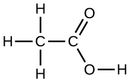
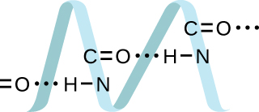
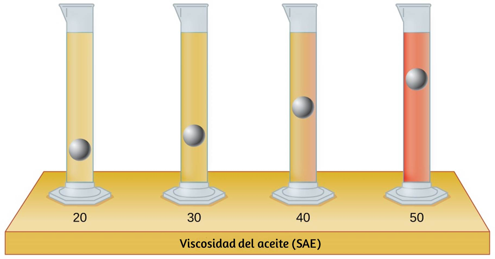
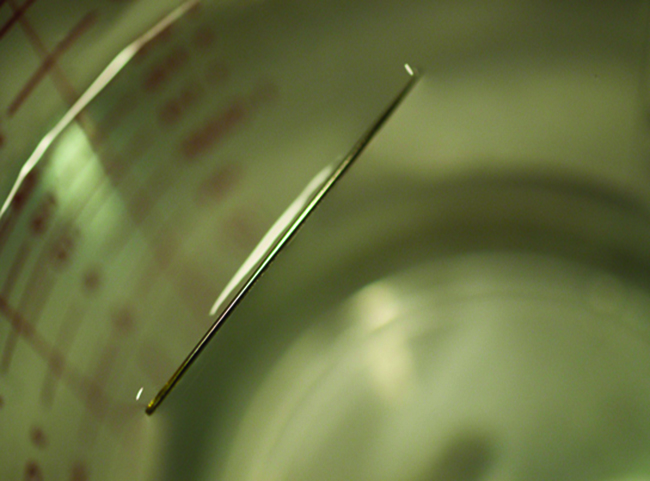
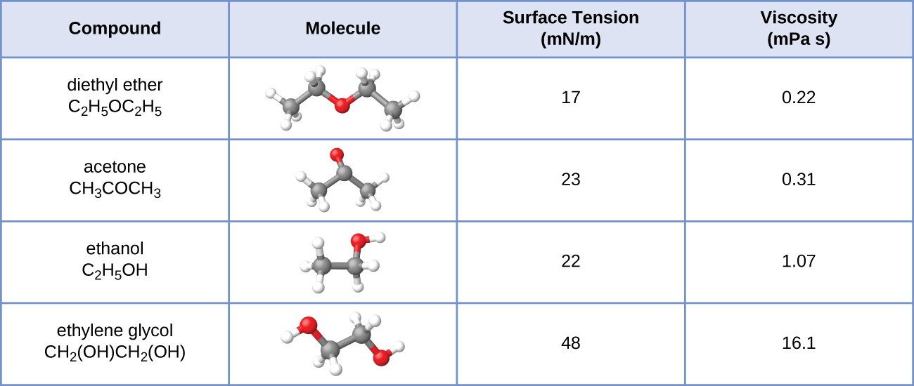
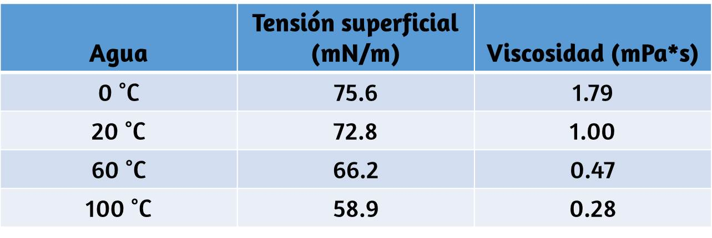
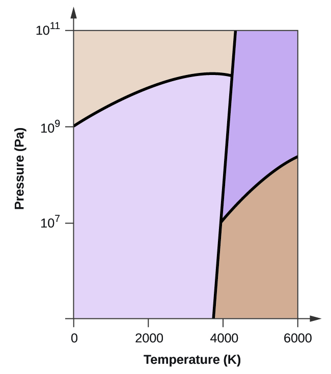
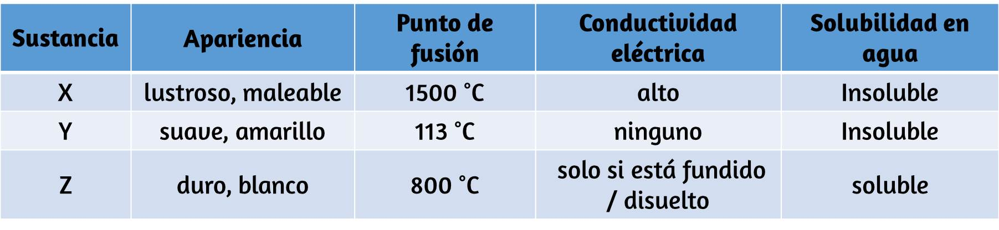
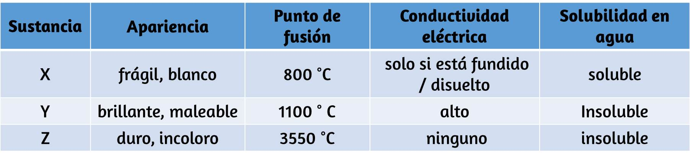

1. En términos de sus propiedades a granel, ¿en qué se diferencian los líquidos y los sólidos? ¿En qué se parecen?
2. En términos de la teoría molecular cinética, ¿en qué se parecen los líquidos a los sólidos? ¿En qué se diferencian los líquidos de los sólidos?
3. En términos de la teoría molecular cinética, ¿en qué se parecen los líquidos a los gases? ¿En qué se diferencian los líquidos de los gases?
4. Explique por qué los líquidos adoptan la forma de cualquier recipiente en el que se vierten, mientras que los sólidos son rígidos y conservan su forma.
5. ¿Cuál es la evidencia de que todos los átomos y moléculas neutrales ejercen fuerzas atractivas entre sí?
6. Abra la simulación de estados de materia Phet para responder las siguientes preguntas: (a) Seleccione la pestaña Sólido, Líquido, Gas. Explore seleccionando diferentes sustancias, calentando y enfriando los sistemas, y cambiando el estado. ¿Qué similitudes notas entre las cuatro sustancias para cada fase (sólido, líquido, gaseoso)? ¿Qué diferencias notas? (b) Para cada sustancia, seleccione cada uno de los estados y registre las temperaturas dadas. ¿Cómo se correlacionan las temperaturas dadas para cada estado con las fortalezas de sus atracciones intermoleculares? Explique. (c) Seleccione la pestaña Potencial de interacción y use los átomos de neón predeterminados. Mueva el átomo de Ne a la derecha y observe cómo cambia la energía potencial. Seleccione el botón Fuerza total y mueva el átomo de Ne como antes. ¿Cuándo es la fuerza total sobre cada átomo atractiva y lo suficientemente grande como para importar? Luego seleccione el botón Fuerzas componentes y mueva el átomo de Ne. ¿Cuándo se equilibran las fuerzas atractivas (van der Waals) y repulsivas (superposición de electrones)? ¿Cómo se relaciona esto con el gráfico de energía potencial versus la distancia entre átomos? Explique.
7. Defina lo siguiente y dé un ejemplo de cada uno: (a) fuerza de dispersión (b) atracción dipolo-dipolo (c) enlace de hidrógeno
8. Los tipos de fuerzas intermoleculares en una sustancia son idénticos, ya sea un sólido, un líquido o un gas. ¿Por qué entonces una sustancia cambia de fase de un gas a un líquido o a un sólido?
9. ¿Por qué aumentan los puntos de ebullición de los gases nobles en el orden $He \lt Ne \lt Ar \lt kr \lt Xe$?
10. Neon y HF tienen aproximadamente las mismas masas moleculares. (a) Explique por qué difieren los puntos de ebullición de Neon y HF. (b) Compare el cambio en los puntos de ebullición de Ne, Ar, Kr y Xe con el cambio de los puntos de ebullición de HF, HCl, HBr y HI, y explique la diferencia entre los cambios con el aumento de la masa atómica o molecular.
11. Organice cada uno de los siguientes conjuntos de compuestos en orden creciente de temperatura del punto de ebullición: (a) $\ce{HCl, H2O, SiH4}$ (b) $\ce{F2, Cl2, Br2}$ (c) $\ce{CH4, C2H6, C3H8}$ (d) $\ce{O2, NO, N2}$
12. La masa molecular del butanol, $\ce{C4H9OH}$, es $74.14$; el del etilenglicol, $\ce{CH2(OH)CH2OH}$, es $62.08$, pero sus puntos de ebullición son $117.2\,°C$ y $174\,°C$, respectivamente. Explica la razón de la diferencia.
13. Sobre la base de las atracciones intermoleculares, explique las diferencias en los puntos de ebullición del n-butano ($−1\,°C$) y el cloroetano ($12\,°C$), que tienen masas molares similares.
14. Sobre la base de los momentos dipolares y / o enlaces de hidrógeno, explique cualitativamente las diferencias en los puntos de ebullición de la acetona ($56,2\,°C$) y el 1-propanol ($97,4\,°C$), que tienen masas molares similares.
15. El punto de fusión de $\ce{H2O_{(s)}}$ es $0\,°C$. ¿Esperaría que el punto de fusión de $\ce{H2S_{(s)}}$ sea $−85\,°C$, $0\,°C$ o $185\,°C$? Explica tu respuesta.
16. El silano ($\ce{SiH4}$), la fosfina ($\ce{PH3}$) y el sulfuro de hidrógeno ($\ce{H2S}$) se funden a $-185\,°C$, $-133\,°C$ y $-85\,°C$, respectivamente. ¿Qué sugiere esto sobre el carácter polar y las atracciones intermoleculares de los tres compuestos?
17. Explique por qué un enlace de hidrógeno entre dos moléculas de agua es más débil que un enlace de hidrógeno entre dos moléculas de fluoruro de hidrógeno.
18. Bajo ciertas condiciones, las moléculas de ácido acético, $\ce{CH3COOH}$, forman "dímeros", pares de moléculas de ácido acético unidas por fuertes atracciones intermoleculares:

Dibuje un dímero de ácido acético, que muestre cómo se mantienen juntas dos moléculas de $\ce{CH3COOH}$, y establezca el tipo de FIM responsable.
19. Las proteínas son cadenas de aminoácidos que pueden formarse en una variedad de disposiciones, una de las cuales es una hélice. ¿Qué tipo de FIM es responsable de mantener la cadena de proteínas en esta forma? En la imagen de la proteína, muestre las ubicaciones de los FMI que mantienen unida la proteína:
20. La densidad del $\ce{NH3}$ líquido es $0.64\, \frac{g}{mL}$; La densidad de $\ce{NH3}$ gaseoso en STP es $0.0007 \frac{g}{mL}$. Explica la diferencia entre las densidades de estas dos fases.
21. Identifique las fuerzas intermoleculares presentes en los siguientes sólidos: (a) $\ce{CH3CH2OH}$ (b) $\ce{CH3CH2CH3}$ (c) $\ce{CH3CH2Cl}$
22. Los tubos de ensayo que se muestran aquí contienen cantidades iguales de los aceites de motor especificados. Al mismo tiempo, se colocaron esferas metálicas idénticas en cada uno de los tubos, y un breve momento después, las esferas habían caído a las alturas indicadas en la ilustración. Clasifique los aceites de motor en orden de viscosidad creciente y explique su razonamiento:
23.el agua, se puede hacer flotar una aguja de acero o un clip para papel colocado cuidadosamente a lo largo de la superficie del agua sin gas. Explique a nivel molecular cómo esto es posible.
Figura 9.67. (crédito: Cory Zanker)
24. Aquí se muestran los valores de tensión superficial y viscosidad para dietil éter, acetona, etanol y etilenglicol.

(a) Explique sus diferencias de viscosidad en términos del tamaño y la forma de sus moléculas y sus FIM. (b) Explique sus diferencias en la tensión superficial en términos del tamaño y la forma de sus moléculas y sus FIM:
25. Es posible que haya escuchado a alguien usar la forma de hablar "más lento que la melaza en invierno" para describir un proceso que ocurre lentamente. Explique por qué este es un lenguaje apropiado, usando conceptos de tamaño y forma molecular, interacciones moleculares y el efecto del cambio de temperatura.
26. A menudo se recomienda dejar que el motor de su automóvil funcione en ralentí para calentarse antes de conducir, especialmente en los días fríos de invierno. Si bien el beneficio del ralentí prolongado es dudoso, sin duda es cierto que un motor cálido es más eficiente en combustible que uno frío. Explica la razón de esto.
27. La tensión superficial y la viscosidad del agua a varias temperaturas diferentes se dan en esta tabla.

(a) A medida que aumenta la temperatura, ¿qué sucede con la tensión superficial del agua? Explica por qué ocurre esto, en términos de interacciones moleculares y el efecto del cambio de temperatura. (b) A medida que aumenta la temperatura, ¿qué sucede con la viscosidad del agua? Explica por qué ocurre esto, en términos de interacciones moleculares y el efecto del cambio de temperatura.
28. A $25\,°C$, ¿a qué altura se elevará el agua en un tubo capilar de vidrio con un diámetro interno de $0,63\,mm$? Consulte el Ejemplo 9.4 para obtener la información requerida.
29. El agua se eleva en un tubo capilar de vidrio a una altura de $17\,cm$. ¿Cuál es el diámetro del tubo capilar?
30. Se agrega calor al agua hirviendo. Explica por qué la temperatura del agua hirviendo no cambia. ¿Qué cambia?
31. Se agrega calor al hielo a $0\,°C$. Explica por qué la temperatura del hielo no cambia. ¿Qué cambia?
32. ¿Qué característica caracteriza el equilibrio dinámico entre un líquido y su vapor en un recipiente cerrado?
33. ¿Identifica dos observaciones comunes que indican que algunos líquidos tienen presiones de vapor suficientes para evaporarse notablemente?
34. Identifique dos observaciones comunes que indican que algunos sólidos, como el hielo seco y las bolas de naftalina, ¿tienen presiones de vapor suficientes para sublimar?
35. ¿Cuál es la relación entre las fuerzas intermoleculares en un líquido y su presión de vapor?
36. ¿Cuál es la relación entre las fuerzas intermoleculares en un sólido y su temperatura de fusión?
37. ¿Por qué la gasolina derramada se evapora más rápidamente en un día caluroso que en un día frío?
38. El tetracloruro de carbono, $\ce{CCl4}$, alguna vez se usó como solvente de limpieza en seco, pero ya no se usa porque es cancerígeno. A $57.8\,°C$, la presión de vapor de $\ce{CCl4}$ es $54.0\,kPa$, y su entalpía de vaporización es $33.05\,\frac{kJ}{mol}$. Use esta información para estimar el punto de ebullición normal para $\ce{CCl4}$.
39. ¿Cuándo es el punto de ebullición de un líquido igual a su punto de ebullición normal?
40. ¿Cómo difiere la ebullición de un líquido de su evaporación?
41. Use la información de la Figura 9.24 para estimar el punto de ebullición del agua en Denver cuando la presión atmosférica es de $83.3\,kPa$.
42. Una jeringa a una temperatura de $20\,°C$ se llena con éter líquido de tal manera que no hay espacio para ningún vapor. Si la temperatura se mantiene constante y el émbolo se retira para crear un volumen que pueda ser ocupado por el vapor, ¿cuál sería la presión aproximada del vapor producido?
43. Explique las siguientes observaciones: (a) Toma más tiempo cocinar un huevo en pies. Davis, Texas (altitud, 5000 pies sobre el nivel del mar) que en Boston (al nivel del mar). (b) La transpiración es un mecanismo para enfriar el cuerpo.
44. La entalpía de vaporización del agua es mayor que su entalpía de fusión. Explicar por qué.
45. Explique por qué las entalpías molares de vaporización de las siguientes sustancias aumentan en el orden $\ce{CH4 \lt C2H6 \lt C3H8}$, aunque el tipo de FIM (dispersión) sea el mismo.
46. Explique por qué las entalpías de vaporización de las siguientes sustancias aumentan en el orden $\ce{CH4 \lt NH3 \lt H2O}$, a pesar de que las tres sustancias tienen aproximadamente la misma masa molar.
47. La entalpía de vaporización de $\ce{CO2_{(l)}}$ es $9.8 \frac{kJ}{mol}$. ¿Esperaría que la entalpía de vaporización de $\ce{CS2_{(l)}}$ sea $28\frac{kJ}{mol}$, $9.8\frac{kJ}{mol}$, o $−8.4\frac{kJ}{mol}$? Discuta la posibilidad de cada una de estas respuestas.
48. La molécula de fluoruro de hidrógeno, $\ce{HF}$, es más polar que una molécula de agua, $\ce{H2O}$ (por ejemplo, tiene un mayor momento dipolar), pero la entalpía molar de vaporización para el fluoruro de hidrógeno líquido es menor que la del agua. Explique.
49. El cloruro de etilo (punto de ebullición, $13\,°C$) se usa como anestésico local. Cuando el líquido se rocía sobre la piel, enfría la piel lo suficiente como para congelarla y adormecerla. Explicar el efecto refrescante del cloruro de etilo líquido.
50. ¿Cuál contiene los compuestos enumerados correctamente en orden de aumento de los puntos de ebullición? (a) $\ce{N2 \lt CS2 \lt H2O \lt KCl}$ (b) $\ce{H2O \lt N2 \lt CS2 \lt KCl}$ (c) $\ce{N2 \lt KCl \lt CS2 \lt H2O}$ (d) $\ce{CS2 \lt N2 \lt KCl \lt H2O}$ (e) $\ce{KCl \lt H2O \lt CS2 \lt N2}$
51. ¿Cuánto calor se requiere para convertir $422\,g$ de $\ce{H2O}$ líquido a $23.5\,°C$ en vapor a $150\,°C$?
52. La evaporación del sudor requiere energía y, por lo tanto, elimina el exceso de calor del cuerpo. Parte del agua que bebe puede convertirse en sudor y evaporarse. Si toma una botella de agua de $20\,onzas$ que había estado en el refrigerador a $3.8\,°C$, ¿cuánto calor se necesita para convertir toda esa agua en sudor y luego en vapor? (Nota: la temperatura de su cuerpo es de $36.6\,°C$. Para resolver este problema, suponga que las propiedades térmicas del sudor son las mismas que para el agua).
53. El tetracloruro de titanio, $\ce{TiCl4}$, tiene un punto de fusión de $-23,2\,°C$ y tiene una fusión $ΔH = 9,37 \frac{kJ}{mol}$. (a) ¿Cuánta energía se requiere para fundir $263.1\,g$ de $\ce{TiCl4}$? (b) Para $\ce{TiCl4}$, ¿cuál tendrá probablemente la mayor magnitud: $ΔH$ fusión o $ΔH$ vaporización? Explica tu razonamiento.
54. A partir del diagrama de fase del agua (Figura 9.31), determine el estado del agua a: (a) $35\,°C$ y $85\,kPa$ (b) $−15\,°C$ y $40\,kPa$ (c) $−15\°C$ y $0.1\,kPa$ ( d) $75\,°C$ y $3\,kPa$ (e) $40\,°C$ y $0.1\,kPa$ (f) $60\,°C$ y $50\,kPa$
55. ¿Qué cambios de fase tendrán lugar cuando el agua se someta a una presión variable a una temperatura constante de $0.005\,°C$? A $40\,°C$? ¿A $−40\,°C$?
56. Las ollas a presión permiten que los alimentos se cocinen más rápido porque la presión más alta dentro de la olla a presión aumenta la temperatura de ebullición del agua. Una olla a presión en particular tiene una válvula de seguridad que está configurada para ventear vapor si la presión excede los $3,4\,atm$. ¿Cuál es la temperatura máxima aproximada que se puede alcanzar dentro de esta olla a presión? Explica tu razonamiento.
57. Del diagrama de fases para el dióxido de carbono en la Figura 9.34, determine el estado del $\ce{CO2}$ a: (a) $20\,°C$ y $1000\,kPa$ (b) $10\,°C$ y $2000\,kPa$ (c) $10\,°C$ y $100\,kPa$ (d) $−40\,°C$ y $500\,kPa$ (e) $−80\,°C$ y $1500\,kPa$ (f) $−80\,°C$ y $10\,kPa$
58. Determine los cambios de fase que sufre el dióxido de carbono a medida que aumenta la presión a una temperatura constante de (a) $−50\,°C$ y (b) $50\,°C$. Si la temperatura se mantiene a $−40\,°C$? A $20\,°C$? (Ver el diagrama de fase en la Figura 9.34.)
59. Considere un cilindro que contiene una mezcla de dióxido de carbono líquido en equilibrio con dióxido de carbono gaseoso a una presión inicial de $65\,atm$ y una temperatura de $20\,°C$. Dibuje una gráfica que represente el cambio en la presión del cilindro con el tiempo a medida que se libera dióxido de carbono gaseoso a temperatura constante.
60. El hielo seco, $\ce{CO2_{(s)}}$, no se derrite a la presión atmosférica. Se sublima a una temperatura de $−78\,°C$. ¿Cuál es la presión más baja a la que se derretirán los $\ce{CO2_{(s)}}$ para dar $\ce{CO2_{(l)}}$? ¿Aproximadamente a qué temperatura ocurrirá esto? (Ver Figura 9.34 para el diagrama de fase).
61. Si una tormenta severa resulta en la pérdida de electricidad, puede ser necesario usar un tendedero para secar la ropa. En muchas partes del país en pleno invierno, la ropa se congelará rápidamente cuando se cuelgue de la cuerda. Si no nieva, ¿se secarán de todos modos? Explica tu respuesta.
62. ¿Es posible licuar el nitrógeno a temperatura ambiente (aproximadamente $25\,°,C$)? ¿Es posible licuar el dióxido de azufre a temperatura ambiente? Explica tus respuestas.
63. El carbono elemental tiene una fase gaseosa, una fase líquida y dos fases sólidas diferentes, como se muestra en el diagrama de fases:

(a) En el diagrama de fases, rotule las regiones de gas y líquido. (b) El grafito es la fase más estable del carbono en condiciones normales. En el diagrama de fase, rotula la fase de grafito. (c) Si el grafito en condiciones normales se calienta a $2500\,K$ mientras la presión se incrementa a $1010\,Pa$, se convierte en diamante. Rotula la fase del diamante. (d) Encierra en un círculo cada punto triple en el diagrama de fase. (e) ¿En qué fase existe carbono a $5000\,K$ y $108\,Pa$? (f) Si la temperatura de una muestra de carbono aumenta de $3000\,K$ a $5000\,K$ a una presión constante de $106\,Pa$, ¿qué transición de fase se produce, si la hay?
64. ¿Qué tipos de líquidos suelen formar sólidos amorfos?
65. A temperaturas muy bajas, el oxígeno, $\ce{O2}$, se congela y forma un sólido cristalino. ¿Cuál describe mejor estos cristales? (a) iónico (b) red covalente (c) metálico (d) amorfo (e) cristales moleculares
66. A medida que se enfría, el aceite de oliva se solidifica lentamente y forma un sólido en un rango de temperaturas. ¿Cuál describe mejor el sólido? (a) iónico (b) red covalente (c) metálico (d) amorfo (e) cristales moleculares
67. Explique por qué el hielo, que es un sólido cristalino, tiene una temperatura de fusión de $0\,°C$, mientras que la mantequilla, que es un sólido amorfo, se ablanda en un rango de temperaturas.
68. Identifique el tipo de sólido cristalino (metálico, red covalente, iónico o molecular) formado por cada una de las siguientes sustancias: (a) $\ce{SiO2}$ (b) $\ce{KCl}$ (c) $\ce{Cu}$ (d) $\ce{CO2}$ (e) $\ce{C_{(diamante)}$ (f) $\ce{BaSO4}$ (g) $\ce{NH3}$ (h) $\ce{NH4F}$ (i) $\ce{C2H5OH}$
69. Identifique el tipo de sólido cristalino (metálico, red covalente, iónico o molecular) formado por cada una de las siguientes sustancias: (a) $\ce{CaCl2}$ (b) $\ce{SiC}$ (c) $\ce{N2}$ (d) $\ce{Fe}$ (e) $\ce{C_{(grafito)}}$ (f) $\ce{CH3CH2CH2CH3}$ (g) $\ce{HCl}$ (h) $\ce{NH4NO3}$ (i) $\ce{K3PO4}$
70. Clasifique cada sustancia en la tabla como un sólido de red metálico, iónico, molecular o covalente:
71. Clasifique cada sustancia en la tabla como un sólido de red metálico, iónico, molecular o covalente:
72. Identifique las siguientes sustancias como iónicos, metálicos, red covalente o sólidos moleculares: La sustancia A es maleable, dúctil, conduce bien la electricidad y tiene un punto de fusión de $1135\,°C$. La sustancia B es frágil, no conduce la electricidad como un sólido, pero lo hace cuando está fundida, y tiene un punto de fusión de $2072\,°C$. La sustancia C es muy dura, no conduce electricidad y tiene un punto de fusión de $3440\,°C$. La sustancia D es blanda, no conduce electricidad y tiene un punto de fusión de $185\,°C$.
73. La sustancia A es brillante, conduce bien la electricidad y se funde a $975\,°C$. La sustancia A es probablemente un (n): (a) sólido iónico (b) sólido metálico (c) sólido molecular (d) sólido de red covalente
74. La sustancia B es dura, no conduce electricidad y se funde a $1200\,°C$. La sustancia B es probablemente un (n): (a) sólido iónico (b) sólido metálico (c) sólido molecular (d) sólido de red covalente
75. Describa la estructura cristalina del hierro, que cristaliza con dos átomos metálicos equivalentes en una celda unitaria cúbica.
76. Describa la estructura cristalina de Pt, que cristaliza con cuatro átomos metálicos equivalentes en una celda unitaria cúbica.
77. ¿Cuál es el número de coordinación de un átomo de cromo en la estructura cúbica de cromo centrada en el cuerpo?
78. ¿Cuál es el número de coordinación de un átomo de aluminio en la estructura cúbica de aluminio centrada en la cara?
79. El metal cobalto cristaliza en una estructura hexagonal más compacta. ¿Cuál es el número de coordinación de un átomo de cobalto?
80. El metal de níquel cristaliza en una estructura cúbica más compacta. ¿Cuál es el número de coordinación de un átomo de níquel?
81. El tungsteno cristaliza en una celda unidad cúbica centrada en el cuerpo con una longitud de borde de $3.165 \text{\AA}$. (a) ¿Cuál es el radio atómico del tungsteno en esta estructura? (b) Calcule la densidad del tungsteno.
82. El platino (radio atómico = $1.38 \text{\AA}$) cristaliza en una estructura cúbica muy compacta. Calcule la longitud del borde de la celda unidad cúbica centrada en la cara y la densidad del platino.
83. El bario cristaliza en una celda unitaria centrada en el cuerpo con una longitud de borde de $5.025 \text{\AA}$ (a) ¿Cuál es el radio atómico del bario en esta estructura? (b) Calcule la densidad del bario.
84. El aluminio (radio atómico = 1.43 $\text{\AA}$) cristaliza en una estructura cúbica muy compacta. Calcule la longitud del borde de la celda unidad cúbica centrada en la cara y la densidad del aluminio.
85. La densidad del aluminio es de $2.7 \frac{g}{cm^3}$; la del silicio es de $2,3 \frac{g}{cm^3}$. Explica por qué el Si tiene la densidad más baja aunque tenga átomos más pesados.
86. El espacio libre en un metal se puede encontrar restando el volumen de los átomos en una celda unitaria del volumen de la celda. Calcule el porcentaje de espacio libre en cada una de las tres redes cúbicas si todos los átomos en cada uno son del mismo tamaño y toca a sus vecinos más cercanos. ¿Cuál de estas estructuras representa el embalaje más eficiente? Es decir, ¿qué paquetes tienen la menor cantidad de espacio no utilizado?
87. El sulfuro de cadmio, a veces utilizado como pigmento amarillo por los artistas, cristaliza con cadmio, ocupando la mitad de los agujeros tetraédricos en una matriz de iones de sulfuro más cercana. ¿Cuál es la fórmula del sulfuro de cadmio? Explica tu respuesta.
88. Un compuesto de cadmio, estaño y fósforo se utiliza en la fabricación de algunos semiconductores. Se cristaliza con cadmio que ocupa un cuarto de los agujeros tetraédricos y estaño que ocupa un cuarto de los agujeros tetraédricos en un conjunto de iones fosfuro más cercano. ¿Cuál es la fórmula del compuesto? Explica tu respuesta.
89. ¿Cuál es la fórmula del óxido magnético de cobalto, que se usa en las cintas de grabación, que cristaliza con átomos de cobalto que ocupan un octavo de los agujeros tetraédricos y la mitad de los agujeros octaédricos en una serie de iones de óxido muy compacta?
90. Un compuesto que contiene zinc, aluminio y azufre se cristaliza con una matriz de iones de sulfuro más compacta. Los iones de zinc se encuentran en un octavo de los agujeros tetraédricos y los iones de aluminio en la mitad de los agujeros octaédricos. ¿Cuál es la formula empírica del compuesto?
91. Un compuesto de talio y yodo cristaliza en un conjunto cúbico simple de iones de yoduro con iones de talio en todos los agujeros cúbicos. ¿Cuál es la fórmula de este yoduro? Explica tu respuesta.
92. ¿Cuál de los siguientes elementos reacciona con el azufre para formar un sólido en el que los átomos de azufre forman una matriz compacta con todos los agujeros octaédricos ocupados: $\ce{Li, Na, Be, Ca}$ o $\ce{Al}$?
93. ¿Cuál es el porcentaje en masa de titanio en el rutilo, un mineral que contiene titanio y oxígeno, si la estructura puede describirse como una matriz más compacta de iones de óxido con iones de titanio en la mitad de los agujeros octaédricos? ¿Cuál es el número de oxidación de titanio?
94. Explique por qué los cloruros de metales alcalinos químicamente similares, $\ce{NaCl}$ y $\ce{CsCl}$, tienen estructuras diferentes, mientras que los $\ce{NaCl}$ y $\ce{MnS}$ químicamente diferentes tienen la misma estructura.
95. A medida que se formaron minerales a partir del magma fundido, diferentes iones ocuparon las mismas ciudades en los cristales. El litio a menudo ocurre junto con el magnesio en minerales a pesar de la diferencia en la carga de sus iones. Sugerir una explicación
96. El yoduro de rubidio se cristaliza con una celda unidad cúbica que contiene iones de yoduro en las esquinas y un ión de rubidio en el centro. ¿Cuál es la fórmula del compuesto?
97. Uno de los diversos óxidos de manganeso se cristaliza con una celda unidad cúbica que contiene iones de manganeso en las esquinas y en el centro. Los iones de óxido se encuentran en el centro de cada borde de la celda unitaria. ¿Cuál es la fórmula del compuesto?
98. El $\ce{NaH}$ cristaliza con la misma estructura cristalina que el $\ce{NaCl}$. La longitud del borde de la celda unidad cúbica de $\ce{NaH}$ es $4.880 \text{\AA}$. (a) Calcule el radio iónico de $\ce{H−}$. (El radio iónico de $\ce{Li+}$ es $0.0.95 \text{\AA}$.) (B) Calcule la densidad de $\ce{NaH}$.
99. El yoduro de talio (I) cristaliza con la misma estructura que el $\ce{CsCl}$. La longitud del borde de la celda unitaria de $\ce{TlI}$ es $4.20 \text{\AA}$. Calcule el radio iónico de $\ce{TI+}$. (El radio iónico de $\ce{I−}$ es $2.16 \text{\AA}$.)
100. Una celda unidad cúbica contiene iones de manganeso en las esquinas e iones de fluoruro en el centro de cada borde. (a) ¿Cuál es la fórmula empírica de este compuesto? Explica tu respuesta. (b) ¿Cuál es el número de coordinación del ion $\ce{Mn^{3+}}$? (c) Calcule la longitud del borde de la celda unitaria si el radio de un ion $\ce{Mn^{3+}}$ es $0.65 \text{\AA}$. (d) Calcule la densidad del compuesto.
101. ¿Cuál es el espacio entre los planos de cristal que difractan los rayos X con una longitud de onda de $1.541\,nm$ en un ángulo $\theta$ de $15.55°$ (reflexión de primer orden)?
102. Un difractómetro que usa rayos X con una longitud de onda de $0.2287\,nm$ produjo un pico de difracción de primer orden para un ángulo de cristal $\theta = 16.21°$. Determine el espacio entre los planos de difracción en este cristal.
103. Un metal con una separación entre planos igual a $0.4164\,nm$ difracta los rayos X con una longitud de onda de $0.2879\,nm$. ¿Cuál es el ángulo de difracción para el pico de difracción de primer orden?
104. El oro cristaliza en una celda unitaria centrada en la cara. La reflexión de segundo orden (n = 2) de los rayos X para los planos que componen las partes superior e inferior de las celdas unitarias está en $\theta = 22.20°$. La longitud de onda de los rayos X es $1.54 \text{\AA}$. ¿Cuál es la densidad del oro metálico?
105. Cuando un electrón en un átomo de molibdeno excitado cae de la capa L a la K, se emite un rayo X. Estos rayos X se difractan en un ángulo de $7.75°$ por planos con una separación de $2.64 \text{\AA}$. ¿Cuál es la diferencia de energía entre la cubierta K y la cubierta L en molibdeno suponiendo una difracción de primer orden?